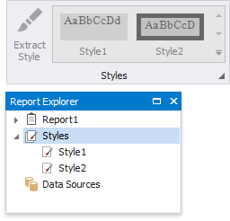
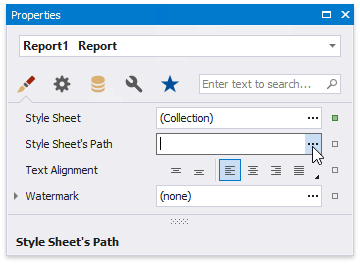
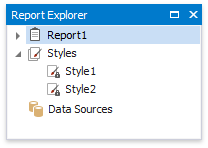

Report Style Sheets
You can combine report styles into a style sheet and reuse them in reports. This topic explains how to create and use style sheets in reports.
Save Styles as Style Sheets
Press the caption button in the toolbar's Styles group to invoke the Style Editor.

Press the  button to save the styles as a style sheet (external REPSS file).
button to save the styles as a style sheet (external REPSS file).
Add a Style Sheet to a Report
Do the following to embed a style sheet's styles in a report:
- invoke the Styles Editor;

- press
 and choose a style sheet file in the Open dialog.
and choose a style sheet file in the Open dialog.

All the styles are now available in the report's toolbar and Report Explorer.

Reuse Style Sheets in Reports
You can utilize styles from a style sheet in a report. To do this, specify the path to the style sheet file in the report's Style Sheet's Path property.

The attached style sheet's styles are now available in the report's toolbar and the Report Explorer. You cannot edit these styles.
